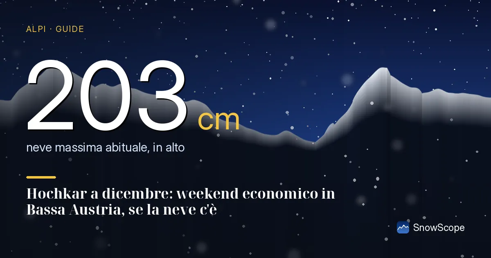

Hochkar a dicembre: weekend economico in Bassa Austria, se la neve c'è
C'è abbastanza neve sull'Hochkar a dicembre? Spesso sì, non sempre: in un tipico 15 dicembre la metà montagna (1583 m) ha 38 cm nei nostri 46 inverni di storico, e il 63 % degli inverni aveva almeno 30 cm nella settimana dal 15 al 21 dicembre. Il prezzo è la parte facile: nel calendario ufficiale online il giornaliero parte da 32,90 EUR nei giorni tranquilli di dicembre.
Le previsioni neve in tempo reale per Hochkar nell'app SnowScopeAltezza neve, allerte powder e mappa 3D, gratis.
Neve sufficiente a dicembre? I numeri
L'Hochkar è la stazione alta della Bassa Austria, una classica gita del weekend da Vienna. Gli impianti vanno da 1378 m a 1788 m, con 19 km di piste mappate e 9 impianti. Per le Alpi orientali è alto, e in nessuno dei nostri 46 inverni il terreno era scoperto in basso il 15 dicembre.
Ma 'non scoperto' non vuol dire 'buono'. La quota di inverni con almeno 30 cm a metà montagna è del 52 % dall'1 al 7 dicembre, 59 % dall'8 al 14, 63 % dal 15 al 21 e 74 % nella settimana di Natale. In un anno magro (1 su 10) la metà montagna ha solo 10 cm il 15 dicembre.


Tre quote, tre risposte
In basso un tipico 15 dicembre ha 32 cm, a metà montagna 38 cm e in vetta 49 cm. È in alto che dicembre funziona meglio: 72 % degli inverni con 30 cm nella settimana dal 15 al 21 dicembre, 80 % a Natale.
La tendenza invita alla prudenza. La media di dicembre a metà montagna è scesa da 51 cm nei primi 15 inverni a 29 cm negli ultimi 15. L'inverno scorso il 15 dicembre c'erano solo 2 cm.
Controllo prezzi
L'Hochkar vende gli skipass a prezzo dinamico nel suo shop ufficiale online: il prezzo dipende dalla data e dalla domanda. Nelle date di dicembre 2026 abbiamo visto giornalieri adulti da 32,90 EUR nei giorni tranquilli fino a 47,90 EUR. La pagina ufficiale dice anche che online si paga meno che in cassa.
Non c'è un prezzo fisso per 6 giorni, e torna con il posto: qui si viene per un giorno o un weekend, non per una settimana.
Il confronto con Lachtal
Lachtal, in Stiria, è l'area familiare simile più vicina, con una base più alta (1572 m). La sua metà montagna a 1885 m ha 46 cm in un tipico 15 dicembre e il 72 % degli inverni con 30 cm nella settimana dal 15 al 21 dicembre, un po' meglio dell'Hochkar. Costa di più: 62 EUR il giornaliero.
L'Hochkar vince quindi sul prezzo per una giornata, Lachtal sulla neve per un breve soggiorno.
Come organizzarsi
Considerate l'Hochkar un weekend da decidere all'ultimo. Seguite la mappa della neve e la previsione durante la settimana, comprate online per una data tranquilla e partite quando in alto c'è un vero manto. Se dicembre è di nuovo magro, tenete i soldi per gennaio.
Consigli per sciatori
- Comprate online, presto e se possibile per un giorno feriale: i prezzi dinamici sono più bassi nei giorni tranquilli di dicembre.
- Sciate prima gli impianti alti: è la quota più affidabile a dicembre.
- Decidete nella stessa settimana, non un mese prima: qui un dicembre magro è diventato più frequente.
- La salita è una strada di montagna: gomme invernali obbligatorie dopo una nevicata.
Altre mappe (siti esterni)
Riferimenti e crediti
- Hochkar: official lift-pass prices (2026-27), checked 13 November 2026 shop.hochkar.com/en/products/skitickets
- Lachtal: official lift-pass prices (2026-27), checked 13 November 2026 www.lachtal.at/en/tickets-prices/day-ski-passes/
Su questi numeri
Numeri della neve: storico neve SnowScope, 46 inverni passati (1980-81 - 2025-26) alle quote della località, corretto per la quota (una stima per un'area, non i bollettini della località); "buona neve" = 30 cm o più al suolo in media nella settimana. Mappa: la nostra altezza abituale al 15 dicembre distribuita sul terreno secondo la quota. Piste e impianti: mappatura OpenSkiMap. Skipass: listini ufficiali delle località, verificati il 13 novembre 2026; i prezzi possono cambiare.
Bollettini valanghe ufficiali: Lawinenwarndienst Niederösterreich
Cita questo articolo
Per ricerca, didattica o stampa: numeri e grafici sono liberamente riutilizzabili con licenza CC BY 4.0 citando così.
SnowScope (2026), Hochkar a dicembre: weekend economico in Bassa Austria, se la neve c'è, https://snowscope.app/blog/it/2026/11/hochkar-december-skiing-vienna-weekend-budget.html, consultato il 2026-11-14
SnowScope (Atlas Labs). (2026, November 14). Hochkar a dicembre: weekend economico in Bassa Austria, se la neve c'è. SnowScope snow reports. https://snowscope.app/blog/it/2026/11/hochkar-december-skiing-vienna-weekend-budget.html
BibTeX
@misc{snowscope2026hochkardecemberskiingvie,
author = {{SnowScope (Atlas Labs)}},
title = {Hochkar a dicembre: weekend economico in Bassa Austria, se la neve c'è},
year = {2026},
month = nov,
howpublished = {\url{https://snowscope.app/blog/it/2026/11/hochkar-december-skiing-vienna-weekend-budget.html}},
note = {Published 2026-11-14 20:11 UTC; accessed 2026-11-14}
}· CC BY 4.0 · Metodi, dati e strumenti →
Hochkar: neve e temperatura per quota, quest'inverno vs lo scorso (strumenti) →
Segui Hochkar
Gratis: un messaggio quando arriva la neve e il meteo ogni mattina.